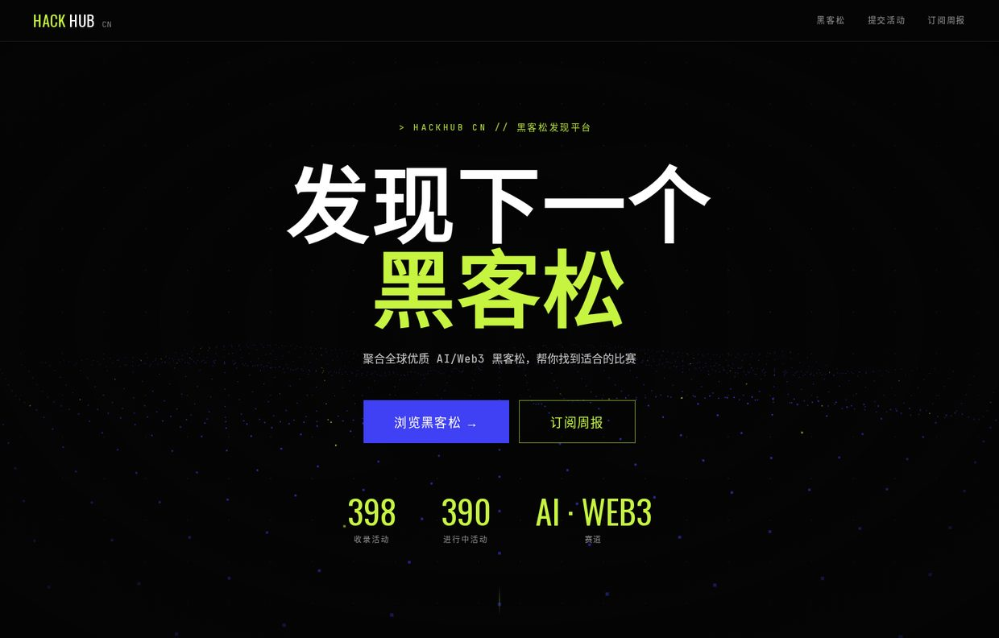
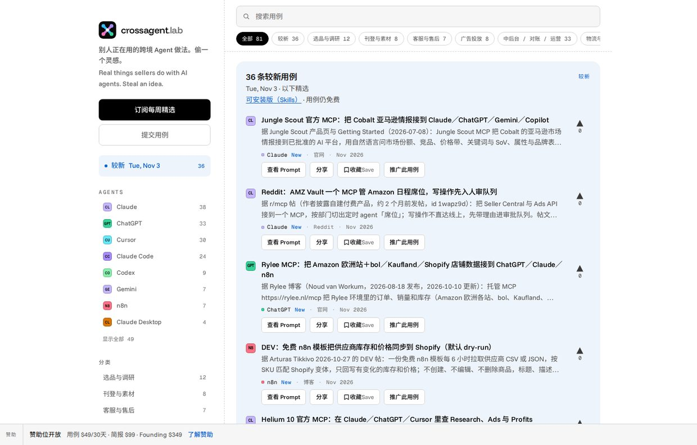
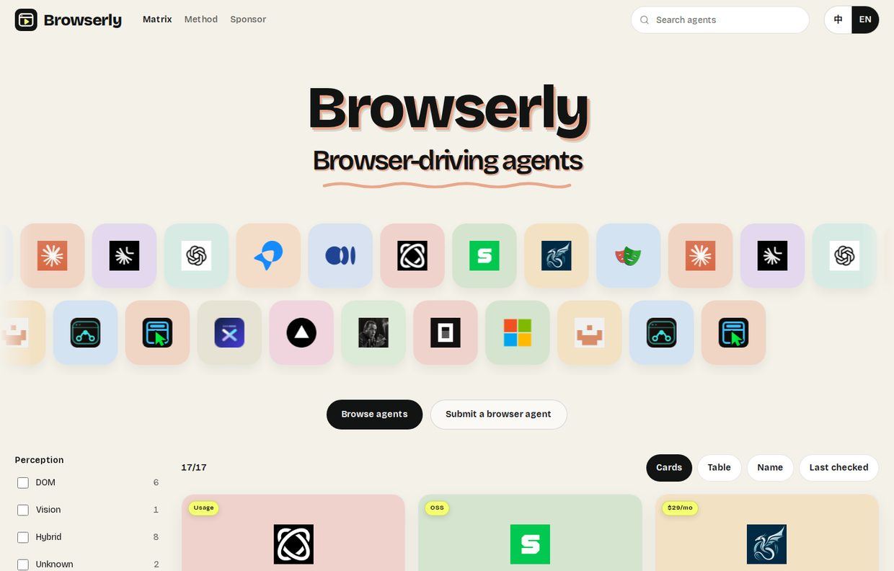
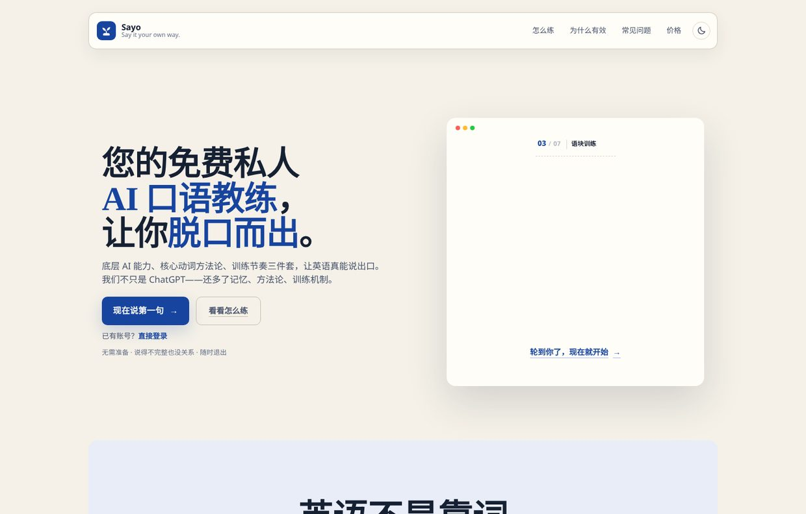
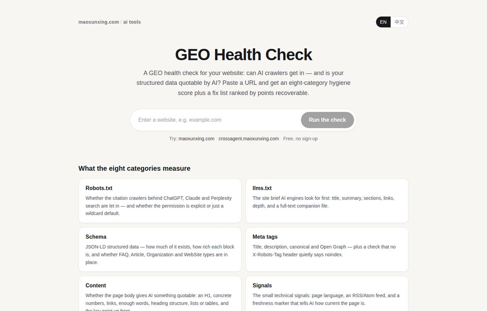

01
作品
SELECTED WORKS


$ harness --version
frontend-harness-cli 0.9.0
$ harness new --prd ./PRD.md
原文导入 · 内核只验 REQ 编号契约，缺号报告、永不重编
$ harness scan ./repo
structure / data / logic / ui / e2e 五维确定性评测 · rubric 一票否决
$ npm test
93 passed · planner / developer / evaluator 三角色 Agent 层



毛训星
MAO XUNXING · MOMO
AI 全栈工程师
11 年工程经验，阿里 7 年跨境电商复杂平台。近两年主攻 AI 研发工程化——把 AI 生成代码的不确定性，收进可执行的工程门禁里。
85%
本人 AI 编码占比（插件采集）
团队约 60%
20×
楼层批量发布提速
约 200 分钟 → 10 分钟
−24%
首页 LCP
2722ms → 2070ms
668
大促巡检覆盖页面
漏配率 约 8% → 2% 以下
02
公司经历
EXPERIENCE
阿里巴巴 · 跨境速卖通
2021.09 — 2026.07
AI 研发提效 / 全球首页运营平台主 Owner / 导购搭建平台核心模块 Owner / 商家中后台
AI Coding Harness — 商业化广告业务 AI 研发提效体系核心建设者
针对 AI 生成代码在复杂中后台场景「生成快、交付不稳定」的问题，依托 Claude Code 云端 Agent + MCP + Skill，构建从需求澄清到发布复盘的 AI 协作工作流，把质量约束从人工 Review 的主观判断，转为编译、Lint 与评测门禁可执行的工程规则。
- 5 层约束体系：按类型、样式、状态、工程、美学五层收敛 AI 解空间；Lint 报错同时作为修复指令注入 Agent 上下文，错误在生成阶段即被拦截并定向修复。
- 8 阶段 Pipeline 与 Sprint Contract：init → clarify → generate → docs → evaluation → verify → publish → evolve；写代码前先把需求协商为可测试的功能点（FP）清单。
- 确定性评测与 4-Gate 门禁：structure / data / logic / ui / e2e 五维评测全部用 tsc、AST、规则扫描与真实测试（不用 LLM 自评），每条检查带 file:line 证据；canRun → dataReady → usageRight → featureWorks 四道 Gate 短路放行。
- 上下文治理：每阶段独立 subagent + 独立上下文，state.json 为唯一状态源；内部实测第 5 阶段关键信息保留率由约 40% 提升至约 95%。
- 落地效果：AI 编码占比团队约 60%、本人约 85%（编码插件采集），交付由人工编码与人工 Review 转为 AI 生成与门禁自动验收。
全球首页运营平台（GOP）主 Owner
速卖通 C 端首页运营平台：覆盖 Native 首页、MyAE 页与端外 PC / M 站首页，按「场景 → 方案 → 页面 → 楼层 → 模块」协议驱动生产页面，支撑多国家配置、排期与投放。
- 大促巡检（平台侧，已落地）：巡检任务创建、审批 / 截图 / 虚机调度、状态聚合与报告、失败重试、自动建缺陷与复测闭环，支撑大促前约 668 个页面线上验收，大促漏配率由约 8% 降至 2% 以下。
- 投放 Agent（MCP Server）：把样式包创建与发布、活动创建、楼层发布、提报与排期同步等平台能力封装为 MCP 工具，Route → Plan → Execute → Review 四阶段编排（离职前完成开发，未上线）。
- 平台能力 Agent 化：排期查询、发布 Diff、历史变更 Diff、楼层查询、SLS 日志查询共 10 个 MCP 工具，工具白名单 + 错误用法反例 + 查空逐级降级重查。
- 楼层批量发布：多楼层跨页面一次走完流程，发布耗时由约 200 分钟降至约 10 分钟（约 20 倍）。
- 稳定性与性能：100+ 运营页面收敛至 20+，配置实时校验、发布卡口与 diff 识别，核心楼层丢失事故降为 0；Service Worker 快照 + SSR 瘦身，PC / M 站首页 LCP 2722ms → 2070ms（−24%）。
导购页面搭建平台核心模块 Owner
- 模型中心与数据标准化：VO Schema + 业务 Process + DO Mapping 三层数据契约，UI 与数据解耦；发布前 DTO 绑定与模板兼容校验，存量模块白名单逐步切流。
- 主题中心与 Agent 可调用资产：Design Token / Theme Token / Theme Plan 三层拆分，四环境发布与回滚；主题查询等 3 个 MCP 工具暴露给大促 Agent 调用。
- 发布链路（0 → 1）：发布即时生效，批量发布、灰度、回滚与三级验证，单模块可回滚至任意历史版本。
- 运行时性能：预请求减少首屏约 200ms，链路统一消除无线端域名跳转约 700ms。
商家中后台（CHC）框架共建 · 研发平台 Owner · 广告前端主导
- 主子应用框架重构：与一位同学共建新一代中后台主子应用框架（纯源码 + 飞冰插件体系），替换原 DADA 低代码工作台及 loader。
- 前端研发平台 Owner：统一商家端与小二端研发入口，新应用接入周期由 1 周压缩至 2 天，累计支撑 100+ 页面。
- 商业化广告一站式推广升级：主导广告前端由低代码平台迁移至新源码体系，推动业务与技术架构同步升级。
- 运费模板国家差异化：抽象共性内核、配置化驱动 UI；Immer 局部更新 + 组件缓存 + 本地 State + Debounce，典型输入 Long Task 约 1193ms → 180ms，编辑场景提交成功率提升约 20.6%。
2019.07 — 2021.09
阿里巴巴 · 国际化中台 — DADA 低代码平台
商家教育系统一号位（从 0 到 1，覆盖 AliExpress / Lazada / Daraz 多业务多国家站点）；基于 qiankun 的微前端改造，Combo 按需加载，微应用 LCP 约 2.5s。DADA 累计产出 1100+ 页面、100+ 使用者。
2016.07 — 2019.03
网易杭研院 · 教育事业部 — 高级前端工程师
网易云课堂多端核心功能负责人（3-2 晋升 3-3）；会员与支付体系（包月 / 包年 / 自动续费统一支付组件）；主导 HTTPS 与 HTTP/2 升级，落地页 FCP 优化约 30%。
2014 — 2019
国铁吉讯 · 浙江核新同花顺
国铁吉讯高级前端工程师（2019）；同花顺券商资讯组前端工程师（2014.07 — 2016.06）：外派北京证券客户总部，独立完成网上营业厅、基金商城等站点上线，贡献表格配置、PDF 等核心组件。
03
技能与教育
SKILLS & EDUCATION
AI 工程
Claude Code · Cursor / Qoder · MCP Server 开发 · Skill 体系设计 · Agent 编排（多阶段 Pipeline / 工具白名单 / 上下文治理）· AI Coding Harness（分层约束 / 架构 Lint / 确定性评测 / Code Review）
全栈开发
TypeScript · React 18 · Node.js（Middleware / BFF）· RPC / REST · Serverless / FaaS · SSR / Hydration
平台工程
中后台框架（qiankun 微前端 / 飞冰插件）· 前端研发平台 · 低代码平台（Schema / 双引擎 / 多语言）· 运营搭建平台（协议驱动 / 模块生产 / 模型与主题中心 / 发布回滚）
性能治理
C 端首页（SSR 瘦身 / Service Worker / LCP）· 商家端复杂页面（渲染优化 / Long Task）
南昌大学计算机科学与技术本科（卓越工程班）· 2010 — 2014
CET-6 · 优秀毕业生 · 多次特等奖学金、国家励志奖学金
写作与出版参与翻译出版《写给大忙人的 JavaScript》
自著期权电子书，Amazon Kindle 上架
内容微信公众号「毛毛星」（科技 / AI 解读）
小红书「毛毛星带你飞」· X @maoxunxing
作品区截图为各站线上真实页面；简历事实以本人投递版简历为准。